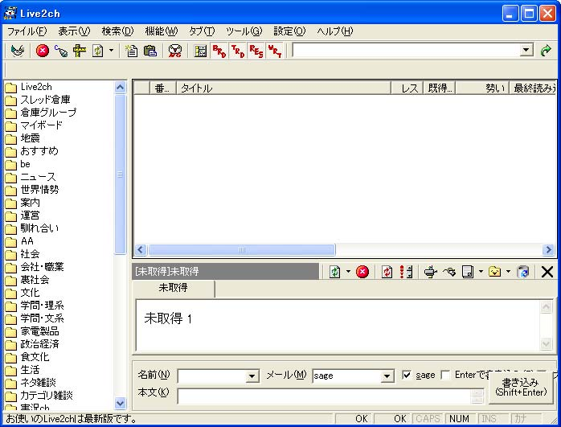
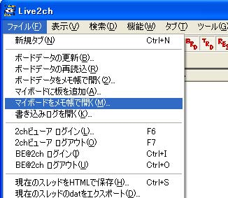
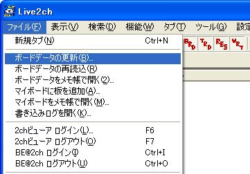
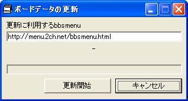
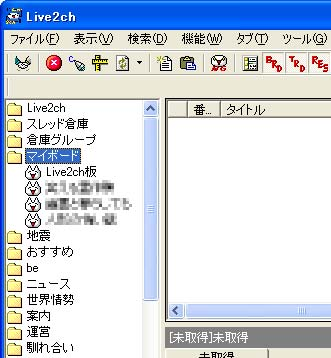

Live2chでの設定方法 まず、Live2chを起動します。  ファイルメニューから「マイボードをメモ帳で開く」を選択してください。  メモ帳が起動しますので、末尾に次のテキストをコピーして貼り付けて下さい。（１度クリックすると全選択されます） コピー貼り付けが終わったら保存をしてメモ帳を閉じます。  「ボードデータの更新」ウインドウが出てきますので「更新開始」ボタンをクリックして下さい。  ２ちゃんねるのボードデータも更新しているので、少々時間が掛かります。ウィンドウが閉じたら「マイボード」に掲示板が追加されています。  板を追加したらコピペ用のテキストも変更する予定にしています。 レス書き、スレ立て共に普通にできます。。 |